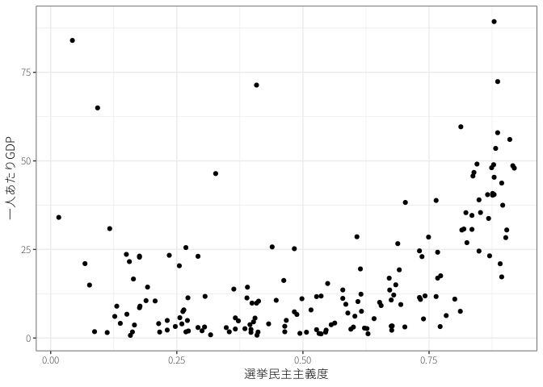
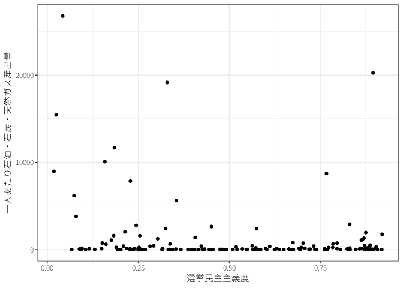
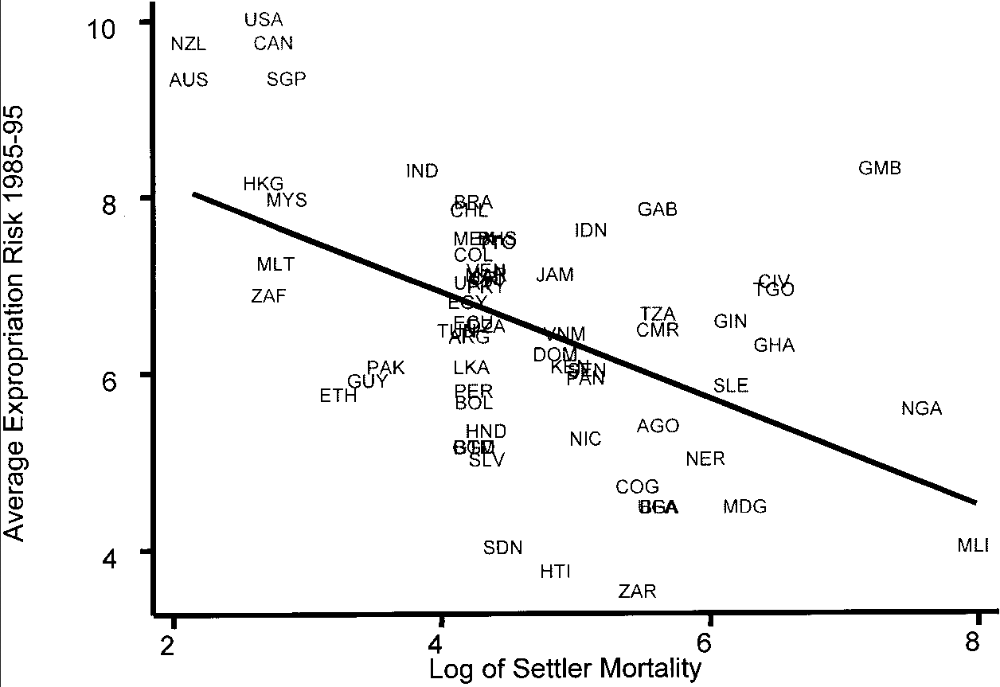
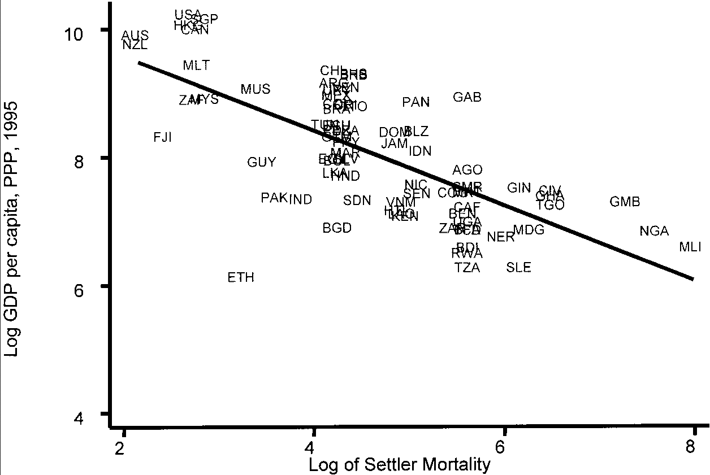
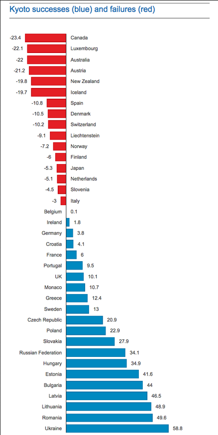
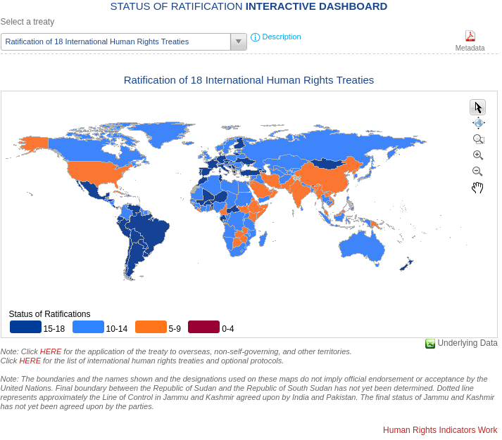
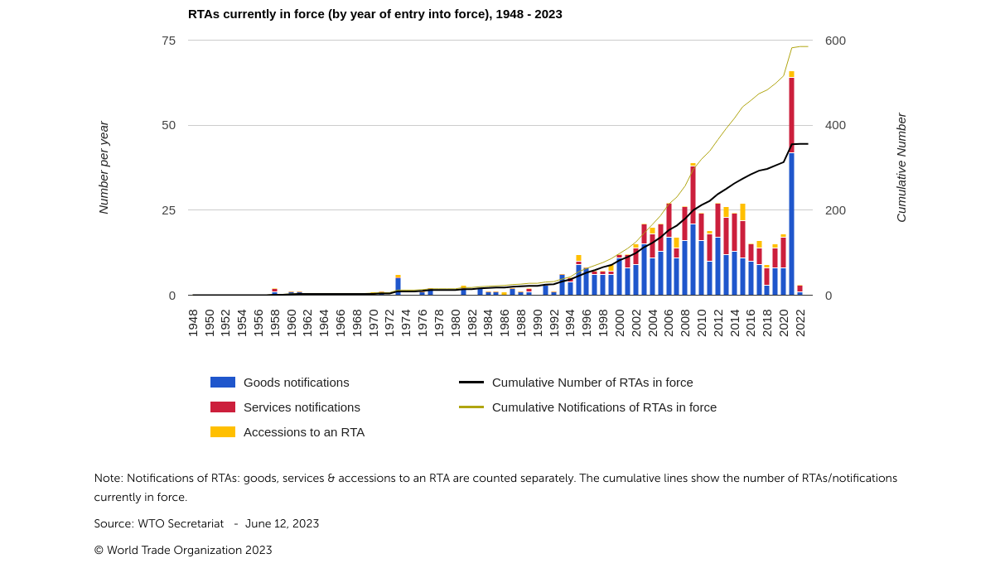

国際政治経済
政治学入門
はじめに
- 戦争以外に国際社会はどのような課題に直面しているのか？
- どのような状況において、国家は協調し合えるのか？
- 強制力のない国際制度にどのような意義を見い出せるのか？
課題文献
- 国際協調と国際制度
- 砂原, 稗田, と 多湖 (2020, 第1章)
- 中西, 石田, と 田所 (2013, 第3, 4章)
- 久米 ほか (2011, 第14章)
- Keohane (1998)
- 国際政治経済
- 砂原, 稗田, と 多湖 (2020, 第11章)
- 中西, 石田, と 田所 (2013, 第6, 7章)
- 野林 ほか (2007)
- 飯田 (2007)
- 田所 (2008)
1 国際政治経済の問題
国際政治経済 (international political economy: IPE)
- 広義：安全保障以外の国際関係上のイシュー全般
- 狭義：国家間の経済関係上のイシュー
- 貿易、通貨、投資（債務危機、金融危機）、多国籍企業、援助
- 越境的政治 (transnational politics)：本来は国内問題であったが国境を越えた問題と認知されたもの
- 開発（経済成長、貧困削減）、環境保護、移民・難民、公衆衛生、科学技術、人権保障
- テロ・内戦、平和構築？
\(\leadsto\)国際問題における共通構造？
1.1 囚人のジレンマagain
国際協力のシナリオ
国家Aと国家Bがとある国際問題の解決に向けて協力をするか否かを選択する。
- ある国家は協力をすれば、どちらの国家も\(b/2\)の利益を得る。
- 国家は協力をすると、\(c\)の費用を支払う。
| 国家A、国家B | 協力 (Cooperates) | 非協力 (Defects) |
|---|---|---|
| 協力 (Cooperates) | \(b-c,b-c\) | \(\frac{b}{2}-c,\frac{b}{2}\) |
| 非協力 (Defects) | \(\frac{b}{2},\frac{b}{2}-c\) | \(0,0\) |
- 一方的協力の費用が小さい (\(c < b/2\))
- 一方的協力の費用が大きい (\(c > b/2\))
安全保障
- 抑止と安心供与：現状維持／攻撃
- 安全保障のジレンマ（囚人のジレンマversion）：軍縮／軍備拡大
- 共同制裁：制裁／制裁逃れ
国際政治経済
- 貿易戦争：貿易促進／貿易規制
- 通貨切り下げ競争：通貨価格の維持／通貨切り下げ
- 底辺への競争 (race to the bottom)：規制維持／規制緩和
- 例：法人税、環境規制
- 環境保護：環境保護／環境破壊
- 開発援助：開発援助／開発援助せず
- 公衆衛生：ワクチン共有／ワクチン独占
1.2 公共財とコモンズ
集合行為問題 (collective action problem) (Olson 1996)：個人合理的行動\(\not \leadsto\)社会合理的帰結
財の性質：排他性／競合性
| 排他的 | 非排他的 | |
|---|---|---|
| 競合的 | 私的財 | コモンズ |
| 非競合的 | クラブ財 | 公共財 |
- 公共財\(\leadsto\)過小供給
- コモンズ\(\leadsto\)過剰消費
- 共有地の悲劇 (tragedy of commons) (Hardin 1968)
1.3 中央集権的解決
国際協力のシナリオ（中央集権的解決）
非協力を選んだ場合は中央集権的組織によって処罰され、費用\(p\)を支払う。
| 国家A、国家B | 協力 (Cooperates) | 非協力 (Defects) |
|---|---|---|
| 協力 (Cooperates) | \(b-c,b-c\) | \(\frac{b}{2}-c,\frac{b}{2}-p\) |
| 非協力 (Defects) | \(\frac{b}{2}-p,\frac{b}{2}-c\) | \(-p,-p\) |
- 十分に処罰が大きい (\(p > c-b/2\))
政治体制\(\leadsto\)経済成長(Robinson 2006)
- 権威主義体制である場合(Baum と Lake 2003; Stasavage 2005; Brown と Mobarak 2009)
資源の呪い (resource curse)(Ross 1999, 2015; Mehlum, Moene, と Torvik 2006)

因果関係？：政治体制\(\leadsto\)経済成長
- 植民地時代の資源の豊富さ(Engerman, Sokoloff, ほか 2000; Acemoglu と Robinson 2016)
- 植民地時代の入植者死亡率(Acemoglu, Johnson, と Robinson 2001)


2 国際協調の論理
アナーキー\(\not \leadsto\)非協力？
アナーキーな国際社会における協力の条件(Russett と Sullivan 1971; Ostrom 2022)
- 覇権
- 長期的関係／リンケージ
- 集団の規模
2.1 覇権
覇権安定論 (hegemonic stability theory)
- 覇権 (hegemony)／覇権国 (hegemon)(Lake 1993)
国際協力のシナリオ（覇権）
国家Aは覇権国であり、裏切られたときの費用は小さい (\(c_A < b/2\)) 。
| 国家A、国家B | 協力 (Cooperates) | 非協力 (Defects) |
|---|---|---|
| 協力 (Cooperates) | \(b-c_A,b-c_B\) | \(\frac{b}{2}-c_A,\frac{b}{2}\) |
| 非協力 (Defects) | \(\frac{b}{2},\frac{b}{2}-c_B\) | \(0,0\) |
- パクス・ブリタニカ／パクス・アメリカーナ
能力のある大国の集団
- オゾンホール／モントリオール議定書

\(\leadsto\)弱者による強者の搾取？(Olson 1996)
2.2 長期的関係
自分が非協力を選んだら相手も非協力を選ぶことが分かっているのに、非協力を選ぶ？
| 国家A、国家B | 協力 (Cooperates) | 非協力 (Defects) |
|---|---|---|
| 協力 (Cooperates) | \(b-c,b-c\) | \(\frac{b}{2}-c,\frac{b}{2}\) |
| 非協力 (Defects) | \(\frac{b}{2},\frac{b}{2}-c\) | \(0,0\) |
国際協力のシナリオ（長期的関係）
国家Aと国家Bは長期的な関係にあり、協力するかどうかを何度も決定する機会がある。
| 1 | 2 | 3 | 4 | 5 | … | |
|---|---|---|---|---|---|---|
| 国家A | C | C | C | C | C | … |
| 国家B | C | C | C | C | C | … |
- 割引因子 (discount factor)／将来の影 (shadow of the future)
\[ \begin{split} \textrm{常に協力の利益} &= b-c + \delta \times (b-c) + \delta^2 \times (b-c) + \delta^3 \times (b-c) + \cdots \end{split} \]
トリガー戦略 (grim trigger strategy)
| 1 | 2 | 3 | 4 | 5 | … | |
|---|---|---|---|---|---|---|
| 国家A | C | D | D | D | D | … |
| 国家B | D | D | D | D | D | … |
\[ \begin{split} \textrm{一回裏切り、その後は互いに非協力の利益} &= \frac{b}{2} \end{split} \]
| 国家A、国家B | トリガー戦略 | 常に非協力 |
|---|---|---|
| トリガー戦略 | \(\frac{b-c}{1-\delta},\frac{b-c}{1-\delta}\) | \(\frac{b}{2}-c,\frac{b}{2}\) |
| 常に協力 | \(\frac{b}{2},\frac{b}{2}-c\) | \(0,0\) |
（完全）フォーク定理
割引因子が十分に大きければ、プレーヤーは相互協力を達成できる。
\[ \delta > \frac{2c}{b} - 1 \]
- 将来の影
- 協力の費用
- 協力の利益
トリガー戦略による抑止
- 互恵主義 (reciprocity)
- 対抗措置 (countermeasure)／処罰 (punishment)／応報 (retaliation)
イシュー・リンケージ：ある分野における協調と別の分野における協調を連携させる
\(\leadsto\)分野を越えたトリガー戦略が可能
2.3 集団の規模
国際協力のシナリオ（多国間協調）
全体で\(N\)ヶ国の国がとある国際問題の解決に向けて協力をするか否かを選択する。
- 1ヶ国が協力すると全ての国が\(b/N\)の利益を得る。
- 協力を選択した国は費用\(c\)を支払う。
\[ \textrm{全ての国が協力したときの利益} = b - c \]
\[ \textrm{他の全ての国が協力したが、自国だけ協力しないときの利益} = \frac{N-1}{N} \times b \]
3 国際制度の論理
第2次世界大戦後のアメリカの覇権$$1970年代からの覇権後退
\(\leadsto\)“After Hegemony”(Keohane 1998)における国際協調の基盤？
3.1 行動基準
国際制度\(\leadsto\)許容される行動の基準\(\leadsto\)違反に対する報復
3.1.1 自由貿易
関税及び貿易に関する一般協定／世界貿易機関 (World Trade Organization: WT)
関税及び貿易に関する一般協定 第11条
- 締約国は、他の締約国の領域の産品の輸入について、又は他の締約国の領域に仕向けられる産品の輸出若しくは輸出のための販売について、割当によると、輸入又は輸出の許可によると、その他の措置によるとを問わず、関税その他の課徴金以外のいかなる禁止又は制限も新設し、又は維持してはならない。
- 関税 (tariff)／非関税障壁 (non-tariff barrier)
- 代償及び譲許その他の義務の停止は、勧告及び裁定が妥当な期間内に実施されない場合に利用することができる一時的な手段であるが、これらのいずれの手段よりも、当該勧告及び裁定の対象となった措置を対象協定に適合させるために勧告を完全に実施することが優先される。代償は、任意に与えられるものであり、また、代償が与えられる場合には、対象協定に適合するものでなければならない。
3.1.2 環境保護
京都議定書／パリ協定
- 附属書Ⅰの締約国は、2008年から2012年までの約束期間において、附属書Ｉの締約国全体の排出量を1990年の水準から少なくとも５パーセント削減することを念頭において、個別に又は共同で、附属書Ａに掲げる温室効果ガスの人為的な排出量（二酸化炭素換算量）の合計が、附属書Ｂに定める数量的な排出抑制及び削減の約束に基づいて計算された割当量を超えないことを確保しなければならない。
締約国は、それぞれ共通に有しているが差異のある責任並びに各国及び地域に特有の開発の優先順位並びに各国特有の目的及び事情を考慮し、非附属書Ⅰの締約国についていかなる新たな約束も導入しないが、条約第４条の規定に基づく既存の約束を再確認し、並びに持続可能な開発を達成するためにその約束の履行の促進を継続し、条約第４条３、５及び７の規定を考慮して、次のことを行う。


パリ協定 第2条
- この協定は、条約（その目的を含む。）の実施を促進する上で、持続可能な開発及び貧困を撲滅するための努力の文脈において、気候変動の脅威に対する世界全体による対応を、次のことによるものを含め、強化することを目的とする。
- 世界全体の平均気温の上昇を工業化以前よりも摂氏二度高い水準を十分に下回るものに抑えること並びに世界全体の平均気温の上昇を工業化以前よりも摂氏一・五度高い水準までのものに制限するための努力を、この努力が気候変動のリスク及び影響を著しく減少させることとなるものであることを認識しつつ、継続すること。
パリ協定 第3条
全ての締約国は、気候変動に対する世界全体による対応への自国が決定する貢献（以下「国が決定する貢献」という。）に関し、前条に規定するこの協定の目的を達成するため、次条、第七条、第九条から第十一条まで及び第十三条に定める野心的な努力に取り組み、及びその努力について通報する。全ての締約国の努力については、この協定の効果的な実施のために開発途上締約国を支援する必要性についての認識の下で、時間とともに前進を示すものとなる。

\(\leadsto\)報復・法的拘束力の「ない」条約
3.1.3 人権保障

\(\leadsto\)報復の「ない」条約
3.2 不完全観測
不完全観測：行動を直接観察できない
\(\leadsto\)シグナルから協力・非協力を推測
- 評判 (reputation)
3.2.1 自由貿易
WTOの紛争解決機関 (dispute settlement body: DSB)
- 協議の要請を受けた日の後六十日の期間内に協議によって紛争を解決することができない場合には、申立てをした紛争当事国(この了解において「申立国」という。)は、小委員会の設置を要請することができる。協議を行っている国が協議によって紛争を解決することができなかったと共に認める場合には、申立国は、当該六十日の期間内に小委員会の設置を要請することができる。
- 法的拘束力あり
3.2.2 環境保護
温室効果ガスの削減行動を観測するのは困難\(\leadsto\)削減目標の設定
- 気候変動に関する政府間パネル (Intergovernmental Panel on Climate Change: IPCC)
3.2.3 人権保障
国際連合の人権理事会
- 普遍的定期審査 (Universal Periodic Review: UPR)
人権条約の委員会
- 報告書審査／個人通報制度
国際NGO（ヒューマン・ライツ・ウォッチ、アムネスティ・インターナショナル、フリーダム・ハウス……）
- ブーメラン・モデル／名指しと非難 (naming and shaming)

3.3 多国間協調
3.3.1 自由貿易
最恵国待遇 (most-favored nation status: MFN)
関税及び貿易に関する一般協定 第1条
- いずれかの種類の関税及び課徴金で、輸入若しくは輸出について若しくはそれらに関連して課され、又は輸入若しくは輸出のための支払手段の国際的移転について課せられるものに関し、それらの関税及び課徴金の徴収の方法に関し、輸入及び輸出に関連するすべての規則及び手続に関し、並びに第三条2及び4に掲げるすべての事項に関しては、いずれかの締約国が他国の原産の産品又は他国に仕向けられる産品に対して許与する利益、特典、特権又は免除は、他のすべての締約国の領域の原産の同種の産品又はそれらの領域に仕向けられる同種の産品に対して、即時かつ無条件に許与しなければならない。
\(\leadsto\)非協力の利益を\(0\)にする。


多角的交渉（ラウンド）
- ドーハ・ラウンド
関税及び貿易に関する一般協定 第28条の2
- 締約国は、関税がしばしば貿易に対する著しい障害となること、したがつて、関税その他輸入及び輸出に関する課徴金の一般的水準の実質的な引下げ、特に、最少限度の数量の輸入をも阻害するような高関税の引下げをめざし、かつ、この協定の目的及び各締約国の異なる必要に妥当な考慮を払つて行われる相互的かつ互恵的な交渉が国際貿易の拡大のためきわめて重要であることを認める。よつて、締約国団は、このような交渉を随時主催することができる。

{kind=link}
{kind=link}
{kind=link}
{kind=link}
\(\leadsto\)取引費用 (transaction cost) の低減／長期的関係
3.3.2 環境保護
酸性雨

枠組み条約／締約国会議
- 予見可能性
- 取引費用
3.4 長期的関係
3.4.1 環境問題
環境問題の影響は長期的・不確実
- 将来の環境保護の利益＞現在の費用？
- 将来の影\(\not \leadsto\)交渉での譲歩(fearon1998?)
- 世代間衡平 (intergenerational equity)
3.5 国際制度の効果
アナーキー\(\leadsto\)制度に効果はない(Mearsheimer 2017)
ほとんどの国はほとんどの時期においてほとんどのルールに従っている(Henkin 1979)
- 国家が時間や労力をかけて交渉？
- 能力構築、明瞭な制度(Chayes と Chayes 1993)
- 遵守できるルールが制度に(Downs, Rocke, と Barsoom 1996)
4 国際社会のガバナンス
国際社会＝アナーキー／国内社会＝ヒエラルキー
アナーキー\(\not \leadsto\)戦争／対立
\(\leadsto\)アナーキーな国際社会におけるガバナンスとは？
- 戦争の回避／協調の実現
- 国際制度の役割？
参考文献
Acemoglu, Daron, Simon Johnson, と James A Robinson. 2001. 「The colonial origins of comparative development: An empirical investigation」. American economic review 91 (5): 1369–1401.
Acemoglu, Daron, と James A. Robinson. 2016. 国家はなぜ衰退するのか : 権力・繁栄・貧困の起源. ハヤカワ文庫. 早川書房.
Baum, Matthew A, と David A Lake. 2003. 「The political economy of growth: democracy and human capital」. American journal of political science 47 (2): 333–47.
Brown, David S, と Ahmed Mushfiq Mobarak. 2009. 「The transforming power of democracy: regime type and the distribution of electricity」. American Political Science Review 103 (2): 193–213.
Chayes, Abram, と Antonia Handler Chayes. 1993. 「On compliance」. International organization 47 (2): 175–205.
Downs, George W, David M Rocke, と Peter N Barsoom. 1996. 「Is the good news about compliance good news about cooperation?」 International organization 50 (3): 379–406.
Engerman, Stanley, Kenneth L Sokoloff, ほか. 2000. 「Institutions, factor endowments, and paths of development in the new world」. Journal of economic Perspectives 14 (3): 217–32.
Grennfelt, Peringe, Anna Engleryd, Martin Forsius, Øystein Hov, Henning Rodhe, と Ellis Cowling. 2020. 「Acid rain and air pollution: 50 years of progress in environmental science and policy」. Ambio 49: 849–64.
Hardin, Garrett. 1968. 「The tragedy of the commons: the population problem has no technical solution; it requires a fundamental extension in morality.」 science 162 (3859): 1243–48.
Henkin, Louis. 1979. How nations behave: law and foreign policy. Columbia University Press.
Keohane, Robert O. 1998. 覇権後の国際政治経済学. 晃洋書房.
Lake, David A. 1993. 「Leadership, hegemony, and the international economy: Naked emperor or tattered monarch with potential?」 International Studies Quarterly 37 (4): 459–89.
Mearsheimer, John J. 2017. 「The false promise of international institutions」. International organization, 237–82. Routledge.
Mehlum, Halvor, Karl Moene, と Ragnar Torvik. 2006. 「Institutions and the resource curse」. The economic journal 116 (508): 1–20.
Olson, Mancur. 1996. 集合行為論 : 公共財と集団理論. Minerva人文・社会科学叢書. ミネルヴァ書房.
Ostrom, Elinor. 2022. コモンズのガバナンス : 人びとの協働と制度の進化. 晃洋書房.
Robinson, James A. 2006. 「Economic development and democracy」. Annual Review of Political Science 9: 503–27.
Ross, Michael L. 1999. 「The political economy of the resource curse」. World politics 51 (2): 297–322.
———. 2015. 「What have we learned about the resource curse?」 Annual review of political science 18: 239–59.
Russett, Bruce M, と John D Sullivan. 1971. 「Collective goods and international organization」. International Organization 25 (4): 845–65.
Stasavage, David. 2005. 「Democracy and education spending in Africa」. American journal of political science 49 (2): 343–58.
中西寛, 石田淳, と 田所昌幸. 2013. 国際政治学. 有斐閣.
久米郁男, 川出良枝, 古城佳子, 田中愛治, と 真渕勝. 2011. 政治学. 補訂版. 有斐閣.
田所昌幸. 2008. 国際政治経済学. 名古屋大学出版会.
砂原庸介, 稗田健志, と 多湖淳. 2020. 政治学の第一歩. 新版. 有斐閣.
野林健, 大芝亮, 納家政嗣, 山田敦, と 長尾悟. 2007. 国際政治経済学・入門. 第3版 版. 有斐閣アルマ. 有斐閣.
飯田敬輔. 2007. 国際政治経済. シリーズ国際関係論. 東京大学出版会.